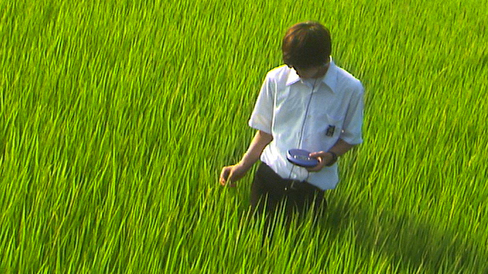
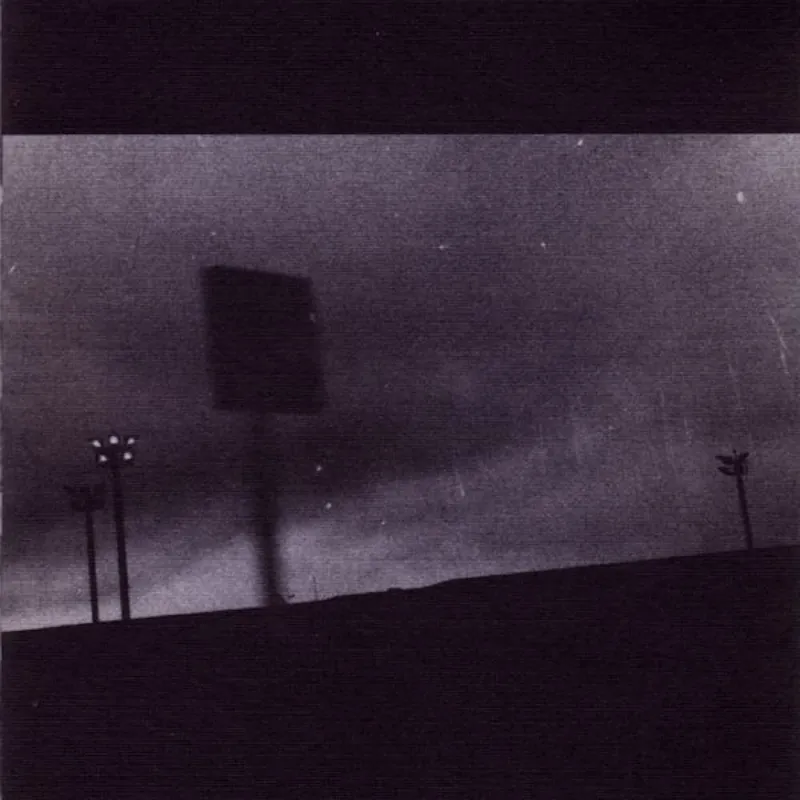
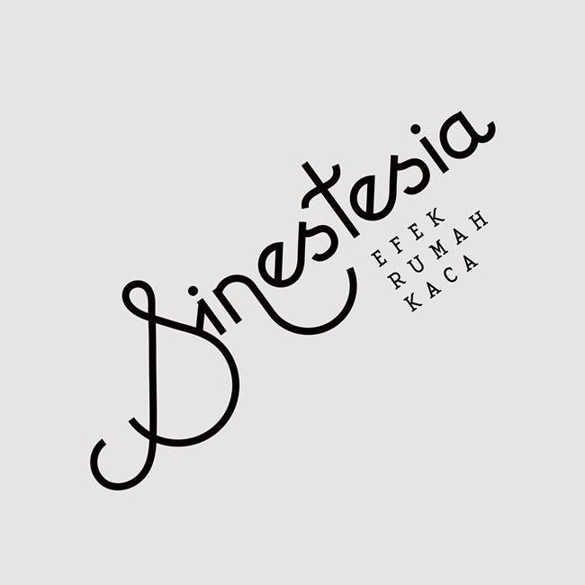
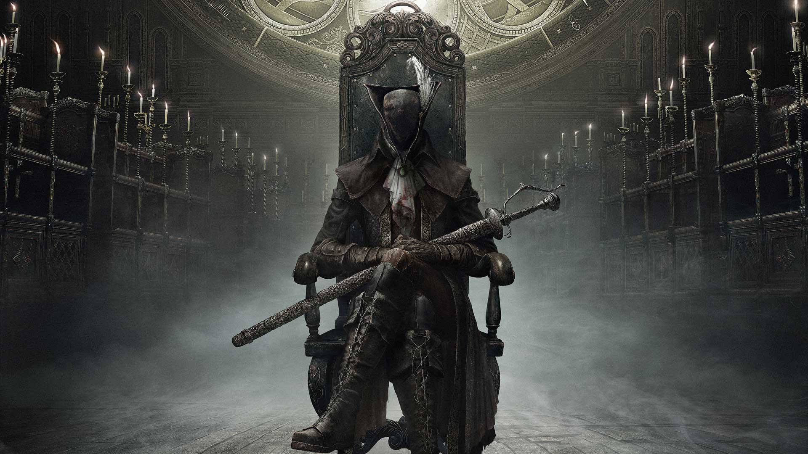
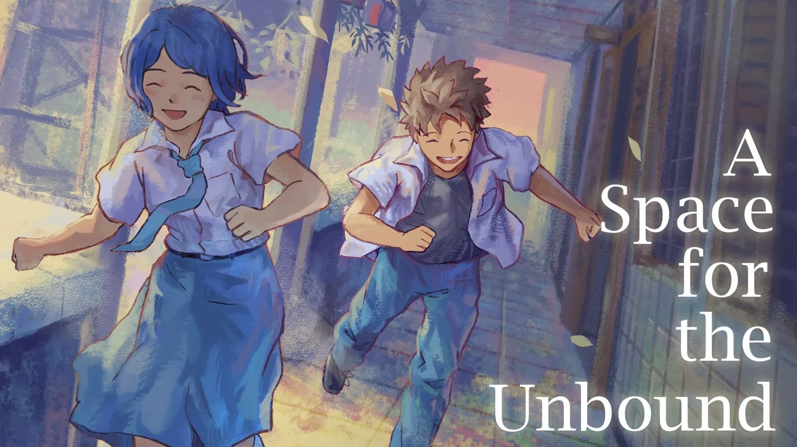

//Welcome to
strangelove profile//
NAME
strangelove, strangelve - user that owns this website
SYNOPSIS
strangelove -h | -V | -f | -m | -g
DESCRIPTION
This website shows a little bit about what the author favorites media. Including films, musics, or even video games.
Other than mentioning the author's favorites, this website also tells about some of media recomendation for its visitors
FILMS
Film always plays a big part in my life. As a form of media that captures many different feels. In this short text, I will
write a short synopsis of 2 of my favorite films
2001: A Space Odyssey (1968) by Stanley Kubrick

Humanity finds a mysterious object buried beneath the lunar surface and sets off to find its origins with the help of HAL 9000,
the world's most advanced super computer
All About Lily Chou-Chou (2001) by Shunji Iwai

Charts the troubled teenage years of students Yūichi Hasumi and Shūsuke Hoshino, exploring the shifting and complex power dynamics
of their relationship against the backdrop of Yūichi's love for the dreamy and abstract music of pop star Lily Chou-Chou
MUSICS
I almost always do my daily tasks with music playing in the background. It's another from of art that truly can be use in wide range of things.
From voicing a protest to a form of entertainment. In this short text I will write two o my favorite music albums, that everyone should give it
a listen atleast once in their life
F# A# ∞ (1997) by Godspeed You! Black Emperor

This album just like many of their other GY!BE albums gives the same feel like it is a soundtrack of a movie. In this one,
an apocalytpic movie. The feeling of "ruin" that it gives but with a little bit of hope just captures it perfectly
Sinestesia (2015) by Efek Rumah Kaca

One of a kind album from an Indonesian indie band. An album that captures multiple different aspect of Indonesian culture.
With a powerful lyrics and beautiful instrumental, this album truly stands out in the scapes of Indonesian music space
VIDEO GAMES
What else could i say about this thing. One of the most popular form of entertainment that people today enjoy it everytime. Even to the
point of addiction. It's interactivity as well as the freedom that this media offers gives a new way that people can consume things.
In this short text, I'll list some of the best games I've played that I would recommend
Bloodborne (2015) by FromSoftware

Well, one of FromSoft games will probably make it to one of this kind of list. But from multiple incredible title that it offers, Bloodborne
always gonna come out on top. From the story, the mechanics, the feels, the soundtracks. All of these create a cohesive and incredible way of
storytelling that not many games could replicate
A Space for the Unbound (2023) by Mojiken Studio

Video games could offer many different things, from the story to the gameplay itself. This Indonesian indie game excel on its story telling.
How it captures the Indonesian culture is impecable. Even though the gameplay is nothing special, the amazing story and the new kind of style
of the games in this oversaturated indonesian game space, paved the way for many other games to come
END OF PAGE